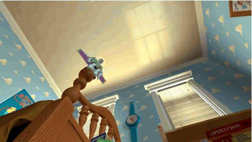
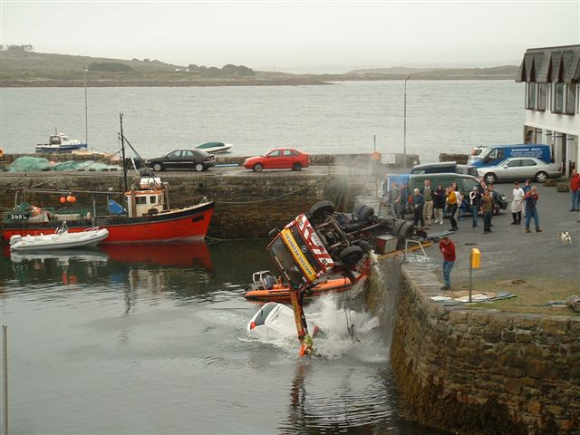
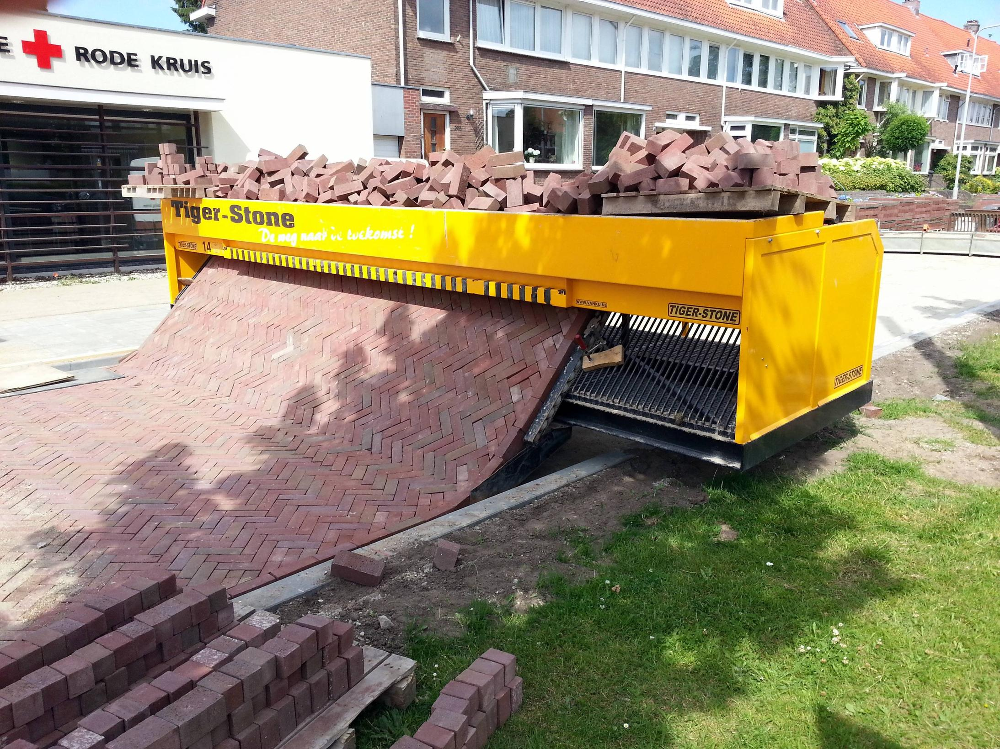
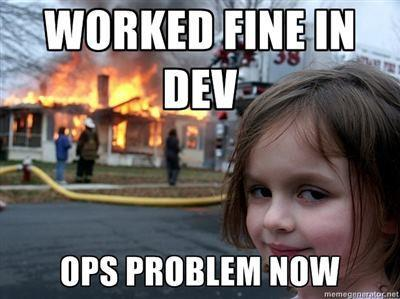

Introduction to Devops in Azure Platform
Techaspect
Kapileshwara simha
Devops Engineer / Network Engineer @ Infrastructure - Schibsted
TechAspect is an innovative digital transformation agency, specializing in delivering digital experience, commerce, and marketing solutions
250M+ users
Errores
Un experto es una persona que ha cometido todos los errores que se pueden cometer en un determinado campo.
Hasta el infinito y más allá

Hasta el infinito y más allá
- Disco
- Memoria
- CPU
- Autolimpieza
SPOF Ocultos
SPOF Ocultos
- Configuraciones hardcoded
- Bases de datos
- Reintentos finitos
Murphy's law, design for failure

Murphy's law, design for failure
Murphy's law, design for failure
Murphy's law, design for failure
Murphy's law, design for failure
Murphy's law, design for failure
Murphy's law, design for failure
Murphy's law, design for failure
Murphy's law, design for failure
Human Factor
- Automatiza

Human Factor
- Automatiza: Simple

Human Factor
- Automatiza: Fácil

Human Factor
- Automatiza
Human Factor
- Automatiza: nothing is impossible

Speed VS blindness
- La velocidad sin control no sirve de nada.
Speed VS blindness
|
|

Speed VS blindness
- Alertas repetitivas
- Alertas cifradas
- Alertas falsos positivos
- Alertas en base rango de errores en logs
- Alertas basadas en expectativas
Speed VS blindness
- Backups
- ¿Monitorización de backups?
- Disaster recovery
Lecciones aprendidas
Hay alguien tan inteligente que aprende de la experiencia de los demás.

Diseño rentable

Diseño rentable
- Escalabilidad vertical
- Escalabilidad horizontal
- Incremento rendimiento => Menor coste
Infraestructura inmutable
Infraestructura inmutable
- 1 unidad inmutable: VM, container...
- Regenerada después de cada cambio
- Promoted from environment to environment
Infraestructura inmutable
- Mascotas VS Ganado
- Sin estado
- Bases de datos? Replicación
Efecto dominó

Efecto dominó
- Circuit breakers
- Fallbacks
- Exponential backoff
Encontrar la raiz del problema
Encontrar la raiz del problema
- Caja negra
- Metodologias:
- 5 Whys
- USE Method (Utilización Saturación y Errores)
Responsabilidad compartida

Responsabilidad compartida

Gracias
jaime.jorge@schibsted.com
jordi.miguel@schibsted.com